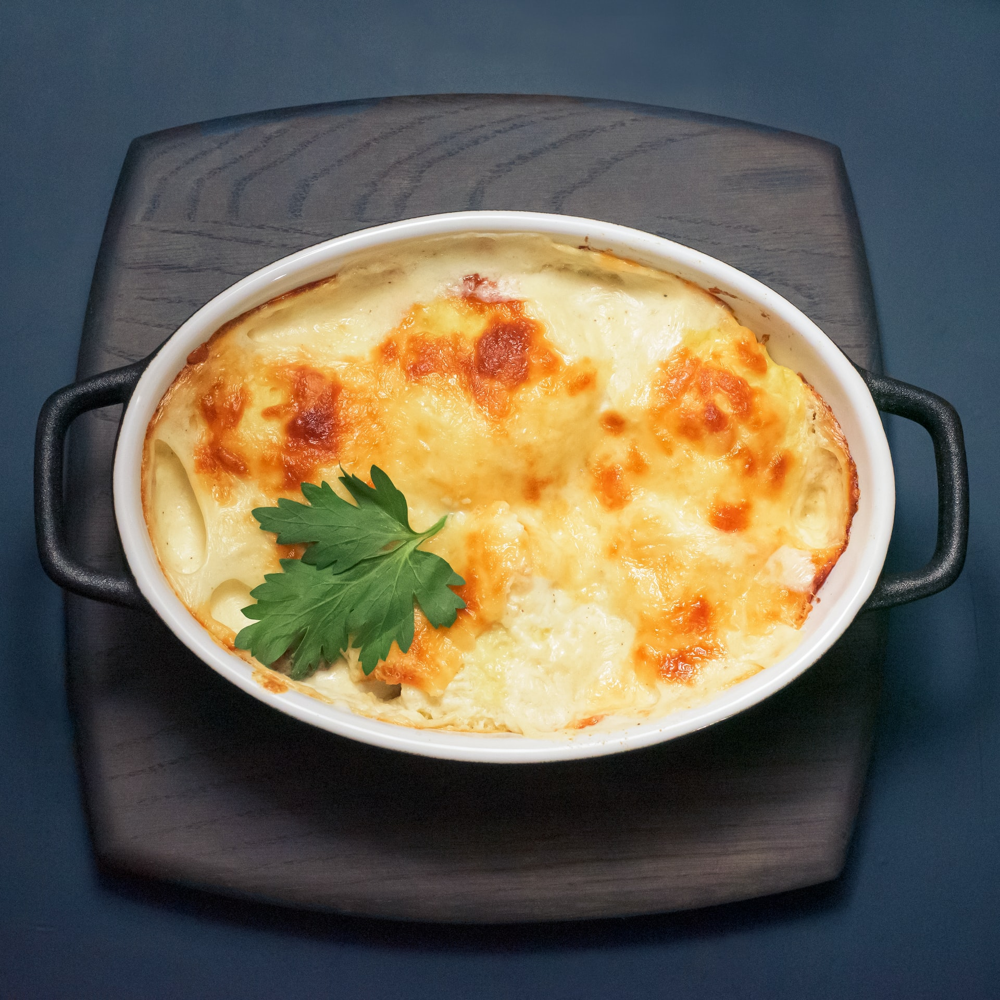

Cheesy Chicken and Broccoli bake
How to make a cheesy chicken and broccoli bake

Ingredients
- 450 g Blanched broccoli, chopped
- 400 g Cooked chicken fillets, chopped
- 75 g Butter
- 480 ml Milk
- 300 g Cheddar cheese
- 480 ml Chicken stock
- 40 g Cornflour
- 120 ml water
- Salt and pepper
Recipe:
- Preheat the oven to 180°C
- Grease the baking dish with butter
- Layer the dish with alternating layers of broccoli and chicken
- Dissolve the cornflour in the water
- Heat a saucepan up on the stove to a medium heat
- Melt the butter in the saucepan
- Add the cornflour mix, the chicken stock, and milk to the saucepan
- Add salt, pepper, and seasoning to taste
- Stir the sauce until it thickens
- Reduce the heat to low
- Stir in half of the cheddar cheese to melt
- Pour the sauce over the chicken and broccoli
- Top with the remainder of the cheddar cheese
- Bake in the over for 30 minutes, or until golden brown and bubbling